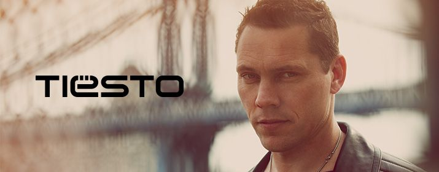

Mainstage
Tiesto ist ein niederländischer DJ und Musikproduzent und sein großer Durchbruch
kam im Jahr 2000 mit dem Remix von Deleriums Silence. 2001 kam sein Debütalbum
In My Memory auf den Markt. Das Album war ein großer Erfolg, auch in den USA.
2002 wurde er erstmals von den Lesern des britischen Magazins DJ Mag zum besten
DJ der Welt gewählt. 2003 und 2004 verteidigt er seinen ersten Platz. Im Jahre
2003 war er mit Tiesto In Concert der erste DJ, der allein in einem Stadion
(Gelredome in Arnheim, Niederlande) vor 25.000 Zuschauern auflegte.
2004 begleitete er bei den Olympischen Sommerspielen in Athen den Einmarsch
der Athleten ins Stadion. Zudem veranstaltete er Tiesto In Concert 2, wo er vor
70.000 Fans eine gewaltige Show ablieferte.
Ebenfalls 2004 ehrte Königin Beatrix ihn wegen seiner Verdienste um die
niederländische Dance-Szene mit der Verleihung des Ordens von Oranien-Nassau
im Range eines Offiziers. 2010 startete er außerdem sein eigenes Label
Musical Freedom, nachdem sich sein Musikstil von Trance eher zu Elektro-House entwickelte.
Er gehört zu den bestverdienenden DJs der Welt mit einem Jahreseinkommen
von 22 Millionen Dollar. Derzeit belegt Tiesto Platz 5 der DJ Mag Top 100.
2014 remixte er die Ballade All of Me des US-amerikanischen R&B-Sängers John
Legend. Zu seinen absolut größten Hits Just Be und Adagio for Stringsgesellen
sich ebenfalls 2014 mit Wasted und Red Light zwei weitere Tracks zu seinen zahlreichen Top Hits.